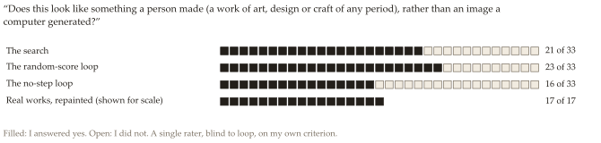
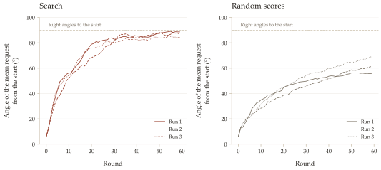
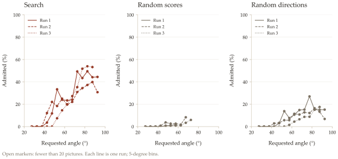

Appendix: what we tested and settled
This appendix holds the tables and figures behind the main pages, grouped by the question each answers. Unless another run is named, counts come from the 15 runs that start at 5 works painted before 1900 (5 starts, 3 loops, 1,920 pictures a run). A cell with 3 numbers reads the search / the random-score loop / the no-step loop.
What the search and its controls painted
What did DuROOM search paint on the manifold, frozen at 1900?
![11 rows, 1 per picture DuROOM search painted that is far, faithful and on the manifold with a work dated 1900 or later within the line and none dated before. Each row: the starting work (image and credit), the painted picture with its round, and its 3 nearest real works of any date in 1 observer, each with artist, year, title and its distance against that observer's manifold line (0.763 DINOv3, 0.830 SigLIP); under 10 of the 11 pictures, our reading by eye of work 1. Rows: Jan Cossiers, 1641 / round 50 / in SigLIP: Piero Dorazio, 1990, 0.726; Sol Lewitt, 1996, 0.741; Sol Lewitt, undated, 0.749 | Alfred Sisley, 1885 / round 55 / in SigLIP: Marcel Barbeau, 1967, 0.766; Alighiero Boetti, 1990, 0.816; Charles Bezie, 1980, 0.832 | Alfred Sisley, 1885 / round 38 / in DINOv3: Gene Davis, 1971, 0.511; Gene Davis, 1965, 0.518; Gene Davis, 1967, 0.535 | Alfred Sisley, 1885 / round 54 / in SigLIP: Alighiero Boetti, 1990, 0.813; Gene Davis, 1971, 0.818; Roger Weik, 2011, 0.821 | Alfred Sisley, 1885 / round 36 / in SigLIP: Gene Davis, 1960, 0.620; Gene Davis, 1959, 0.657; Ding Yi, 1998, 0.695 | Alfred Sisley, 1885 / round 38 / in SigLIP: Gene Davis, 1972, 0.682; Ha Chong Hyun, 1977, 0.742; Gene Davis, 1978, 0.745 | Vincent van Gogh, 1890 / round 55 / in SigLIP: Hossein Zenderoudi, 1972, 0.761; Jahar Dasgupta, undated, 0.771; Simon Hantai, 1969, 0.779 | Edgar Degas, 1890 / round 15 / in DINOv3: Gene Davis, 1971, 0.440; Herman De Vries, 1974, 0.442; Gene Davis, 1961, 0.469 | Edgar Degas, 1890 / round 32 / in DINOv3: Kazuo Shiraga, undated, 0.643; Rene Duvillier, 1965, 0.700; Jean Messagier, 1992, 0.721 | Edgar Degas, 1890 / round 17 / in SigLIP: Ding Yi, 2001, 0.688; Eric Zammitt, 2008, 0.688; Manfred Kuttner, undated, 0.700 | Edgar Degas, 1890 / round 17 / in SigLIP: Leon Berkowitz, 1968, 0.619; Gene Davis, 1968, 0.634; Gene Davis, 1965, 0.660.](figures/appendix_finds_on_v6.svg)
What did DuROOM search paint off the manifold, frozen at 1900?
![3 rows from the runs frozen at 1900, 2 of the 5 starts, each a far, faithful picture with no real work within the manifold line in either observer and a large leftover share. Each row: the starting work (Jan Cossiers, The Martyrdom of St Catherine, 1641, shown; Fra Angelico, Madonna of Humility, 1419, named only), the painted picture with its round, and its 3 nearest real works of any date in SigLIP, each beyond the line (0.830). Rows: Jan Cossiers, 1641 / round 7 / in SigLIP: Robert Silvers, undated, 0.864; Robert Silvers, undated, 0.871; Gerhard Richter, 2007, 0.873 | Fra Angelico, 1419 (named only) / round 15 / in SigLIP: Horacio Garcia Rossi, undated, 0.873; Nina Tokhtaman Valetova, 2009, 0.885; Abraham Palatnik, 1958, 0.891 | Fra Angelico, 1419 (named only) / round 28 / in SigLIP: Guy Mees, 1989, 0.899; Roy Lichtenstein, 1970, 0.914; Gerwald Rockenschaub, 2007, 0.918.](figures/appendix_finds_off1900_v2.svg)
What did DuROOM search paint off the manifold, against today’s reference?
![5 rows from the runs against today's reference, each a far, faithful picture with no real work within the manifold line in either observer. Each row: the starting work, the painted picture with its round, and its 3 nearest real works of any date, each with its distance beyond the line; under each painted picture, our reading by eye of work 1. Rows: Orest Kiprensky, 1807 / round 14 / in SigLIP: Alfred Freddy Krupa, 2015, 0.870; Ellsworth Kelly, 1955, 0.901; Zdzislaw Beksinski, undated, 0.902 | Orest Kiprensky, 1807 / round 15 / in SigLIP: Noma Bar, 2017, 0.836; Mario Ballocco, 1950, 0.872; Lorser Feitelson, 1962, 0.874 | Orest Kiprensky, 1807 / round 14 / in DINOv3: Nuri Iyem, 1979, 0.795; Nuri Iyem, 1999, 0.808; Felix Labisse, 1966, 0.835 | Käthe Kollwitz, 1897 / round 5 / in SigLIP: Zdzislaw Beksinski, undated, 0.849; M C Escher, 1959, 0.859; Lee Bontecou, 1967, 0.863 | Konstantin Gorbatov, 1920 / round 28 / in SigLIP: Grazia Varisco, 2008, 0.838; Mira Schendel, 1987, 0.842; Stephen Antonakos, 1996, 0.854.](figures/appendix_finds_today_v3.svg)
What does a random draw of DuROOM search’s pictures look like?
![Pictures of DuROOM search drawn at random, grouped by where they landed; 15 rows. Each row: the painted picture with its starting work named and its round, then its 3 nearest real works of any date, numbered 1 to 3, each with artist, year, title and its distance against the manifold line; under each painted picture, our reading by eye. Groups: DuROOM search, off the manifold: 11 shown, drawn at random from 122; DuROOM search, a work dated before 1900 within the line: 4 shown, drawn at random from 98.](figures/appendix_grid_search_v3.svg)
What does a random draw of the 2 controls’ pictures look like?
![Pictures of the 2 controls drawn at random, grouped by where they landed; 14 rows. Each row: the painted picture with its starting work named and its round, then its 3 nearest real works of any date, numbered 1 to 3, each with artist, year, title and its distance against the manifold line; under each painted picture, our reading by eye. Groups: random-score loop, art went there only after 1900: 3 shown, drawn at random from 441; random-score loop, a work dated before 1900 within the line: 1 shown, drawn at random from 44; random-score loop, off the manifold: 4 shown, drawn at random from 85; no-step loop, art went there only after 1900: 2 shown, drawn at random from 215; no-step loop, a work dated before 1900 within the line: 1 shown, drawn at random from 64; no-step loop, off the manifold: 3 shown, drawn at random from 45. 1 real work is named only.](figures/appendix_grid_controls_v4.svg)
What does a random draw of the single walk’s pictures look like?
![Pictures of the single walk drawn at random, grouped by where they landed; 7 rows. Each row: the painted picture with its starting work named and its round, then its 3 nearest real works of any date, numbered 1 to 3, each with artist, year, title and its distance against the manifold line; under each painted picture, our reading by eye. Groups: single walk, art went there only after 1900: 2 shown, drawn at random from 965; single walk, a work dated before 1900 within the line: 1 shown, drawn at random from 42; single walk, off the manifold: 4 shown, drawn at random from 204.](figures/appendix_grid_walk_v4.svg)
What does a random draw against today’s reference look like?
![Pictures of the runs against today's reference drawn at random, grouped by where they landed; 12 rows. Each row: the painted picture with its starting work named and its round, then its 3 nearest real works of any date, numbered 1 to 3, each with artist, year, title and its distance against the manifold line; under each painted picture, our reading by eye. Groups: DuROOM search against today's reference, faithful, on the manifold: 5 shown, drawn at random from 2,365; random-score loop against today's reference, faithful, off: 4 shown, drawn at random from 18; no-step loop against today's reference, faithful, off: 3 shown, drawn at random from 32.](figures/appendix_grid_today_v3.svg)
Far
How often is each kind of picture far and faithful?
| Group | Pictures | Far and faithful | Far, not faithful | Near, faithful | Near, not faithful |
|---|---|---|---|---|---|
| Works before 1900, repainted from their own vectors | 1,000 | 2 | 1 | 988 | 9 |
| Works from 1900 to 1969, repainted | 512 | 26 | 2 | 474 | 10 |
| Works from 1970 on, repainted | 663 | 94 | 18 | 520 | 31 |
| Random requests inside the cone of the works before 1900 | 192 | 0 | 0 | 0 | 192 |
| Random requests anywhere on the sphere | 64 | 0 | 15 | 0 | 49 |
| Requests read from noise images | 160 | 32 | 7 | 96 | 25 |
| The free search, three runs, pictures | 5,760 | 0 | 4,094 | 79 | 1,587 |
| The search, pictures | 9,600 | 4,380 | 93 | 4,972 | 155 |
| The random-score loop, pictures | 9,600 | 1,534 | 20 | 7,992 | 54 |
| The no-step loop, pictures | 9,600 | 2,708 | 2 | 6,889 | 1 |
Are later works still far once repainted by the decoder?
| Repainted works | Far and faithful, 1900 to 1969 | Far and faithful, before 1900 |
|---|---|---|
| All | 26 of 512 | 2 of 1,000 |
| With the reference’s artists removed | 26 of 405 | 0 of 161 |
| Group | Median fidelity |
|---|---|
| Today’s reference, repainted works before 1900 (593) | 0.526 |
| Today’s reference, repainted works from 1970 on (663) | 0.581 |
Do works repainted again and again drift?
| Trip | Median year of the 10 nearest real works | Median lean |
|---|---|---|
| 0 | 1856 | -0.01 |
| 1 | 1856 | -0.01 |
| 2 | 1851 | -0.01 |
| 3 | 1857 | 0.01 |
| 4 | 1870 | 0.02 |
| 5 | 1878 | 0.04 |
| 6 | 1905 | 0.10 |
Which kind of far tells repainted later works from earlier ones?
| Kind of far | Later works that pass, of 512 | Earlier works that pass, of 1,000 | AUC | Rank correlation with the score |
|---|---|---|---|---|
| The score | 28 (26 faithful) | 3 (2 faithful) | 0.85 | |
| A bar scaled to the neighbourhood | 4 far and faithful | 1 far and faithful | 0.74 | |
| The leftover | 5 | 0 | 0.79 | 0.78 |
What if the search is scored by the leftover?
| Count | The leftover search | The search |
|---|---|---|
| Picked, Jan Cossiers, 1641 | 59 | 59 |
| Picked, Fra Angelico, 1419 | 220 | 138 |
| Picked, Alfred Sisley, 1885 | 48 | 35 |
| Picked, Vincent van Gogh, 1890 | 331 | 30 |
| Picked, Edgar Degas, 1890 | 21 | 28 |
| Picked, all 5 starts | 679 | 290 |
Why 2 observers, and why the smaller of the 2 scores?
| Measure | Later works called far, of 69,468 |
|---|---|
| Far in both observers | 11,181 |
| DINOv3 alone | 8,381 |
| SigLIP alone | 8,513 |
| CLIP alone | 4,912 |
| One cut on the smaller of the 2 rescaled scores | 11,297 |
| One cut on their mean | 12,002 |
Do CLIP and AIMv2 call the same pictures far as the 2 observers?
| Of each loop’s 9,600 pictures | The search | Random-score loop | No-step loop |
|---|---|---|---|
| Of the far and faithful by the 2 observers, also far in CLIP | 2,755 (62.9%) | 541 (35.3%) | 1,060 (39.1%) |
| Of the far and faithful by the 2 observers, also far in AIMv2 | 4,320 (98.6%) | 1,418 (92.4%) | 2,669 (98.6%) |
| Faithful and far in the 2 observers and CLIP | 2,755 (28.7%) | 541 (5.6%) | 1,060 (11.0%) |
| The same, by start (Cossiers, Fra Angelico, Sisley, van Gogh, Degas) | 319, 677, 318, 486, 955 | 68, 166, 118, 12, 177 | 312, 470, 37, 41, 200 |
| Faithful and far in the 2 observers and AIMv2 | 4,320 (45.0%) | 1,418 (14.8%) | 2,669 (27.8%) |
| The same, by start (Cossiers, Fra Angelico, Sisley, van Gogh, Degas) | 664, 849, 874, 836, 1,097 | 294, 347, 288, 129, 360 | 530, 663, 204, 1,001, 271 |
| Faithful and far in CLIP alone | 3,731 (38.9%) | 1,463 (15.2%) | 2,155 (22.4%) |
| Faithful and far in AIMv2 alone | 8,110 (84.5%) | 7,208 (75.1%) | 7,004 (73.0%) |
| Far in CLIP, of the pictures the 2 observers call near | 21.0% | 11.9% | 15.9% |
| Far in AIMv2, of the pictures the 2 observers call near | 76.8% | 72.5% | 62.9% |
| Hits also far in CLIP | 41 of 120 | 20 of 65 | 19 of 40 |
Does the search’s lead rest on the one bar?
| Regions and draw | The search | Random-score loop | No-step loop | The search is ahead of the random-score loop | The search is ahead of the no-step loop |
|---|---|---|---|---|---|
| One bar, for comparison | 4,380 | 1,534 | 2,708 | ahead | not ahead |
| 4 regions, draw 1 | 2,887 | 332 | 940 | ahead | not ahead |
| 4 regions, draw 2 | 3,303 | 472 | 1,301 | ahead | not ahead |
| 4 regions, draw 3 | 2,516 | 277 | 1,016 | ahead | not ahead |
| 4 regions, draw 4 | 1,256 | 372 | 588 | not ahead | not ahead |
| 4 regions, draw 5 | 1,153 | 340 | 516 | not ahead | ahead |
| 8 regions, draw 1 | 500 | 126 | 429 | ahead | not ahead |
| 8 regions, draw 2 | 500 | 128 | 305 | ahead | ahead |
| 8 regions, draw 3 | 432 | 108 | 175 | ahead | ahead |
| 8 regions, draw 4 | 435 | 97 | 156 | ahead | ahead |
| 8 regions, draw 5 | 518 | 213 | 365 | not ahead | not ahead |
| Draws in which the search is ahead, of 10 | 7 | 4 |
What the search and its controls did
What does the no-step loop paint when told the real score?
| Count, type of graphics card and loop | Jan Cossiers, 1641 | Fra Angelico, 1419 | Alfred Sisley, 1885 | Vincent van Gogh, 1890 | Edgar Degas, 1890 | All 5 starts |
|---|---|---|---|---|---|---|
| Admitted, another type of card: the no-step loop told the real score | 22 | 47 | 28 | 33 | 16 | 146 |
| Admitted, another type of card: the no-step loop | 17 | 8 | 7 | 12 | 10 | 54 |
| Admitted, the search’s type of card: the no-step loop told the real score | 34 | 22 | 22 | 23 | 16 | 117 |
| Admitted, the search’s type of card: the no-step loop | 14 | 8 | 5 | 10 | 10 | 47 |
| Admitted, the search’s type of card: the search | 30 | 41 | 36 | 24 | 11 | 142 |
| Far pictures, the search’s type of card: the no-step loop told the real score | 1,000 | 530 | 745 | 1,333 | 722 | 4,330 |
| Far pictures, the search’s type of card: the search | 708 | 907 | 901 | 843 | 1,114 | 4,473 |
| Check | Result |
|---|---|
| The 16-bit CLIP reading between the reference’s card type and the runs’ type, chord | Median 0.00130, at most 0.0079 |
| The same command from the same start on another type of card (a pair of runs outside the 15) | 66 admitted against 30; far pictures 1,272 against 489 of 1,920 |
What if the restart uses 1, 16 or every feasible picture?
| Count, all 5 starts unless a start is named | Restart from 1 | Restart from 4 (the search) | Restart from 16 | Restart from every feasible picture |
|---|---|---|---|---|
| Admitted | 425 | 142 | 64 | 43 |
| Hits | 283 | 120 | ||
| Hits, Jan Cossiers, 1641 | 37 | 23 | ||
| Hits, Fra Angelico, 1419 | 65 | 27 | ||
| Hits, Alfred Sisley, 1885 | 58 | 35 | ||
| Hits, Vincent van Gogh, 1890 | 63 | 24 | ||
| Hits, Edgar Degas, 1890 | 60 | 11 | ||
| Far and faithful | 4,367 | 4,380 | ||
| Far and faithful and off the manifold | 1,004 | 331 | ||
| Far and faithful with a large leftover share | 964 | 1,538 | ||
| Of those, with a work dated 1900 or later within the manifold line and none dated before 1900 | 493 | 1,314 | ||
| Of those, off the manifold | 459 | 205 |
| In degrees | The search | Random-score loop | No-step loop |
|---|---|---|---|
| CMA-ES’s own update, median per round | 7.1 | 7.0 | 0.005 |
| From one round’s centre to the next, after the restart, median per round | 17.9 | 15.3 | 13.5 |
Does the search reach more pictures that lie apart?
| Pictures that lie apart, all 5 starts | The search | The single walk | The random-score loop | The no-step loop |
|---|---|---|---|---|
| Far and faithful, with a large leftover share and a work dated 1900 or later within the manifold line and none dated before 1900 | 187 | 217 | 36 | 10 |
| Far and faithful pictures off the manifold | 174 | 205 | 89 | 49 |
Where do the hits sit among real works?
| Hits by kind | The search | Random-score loop | No-step loop |
|---|---|---|---|
| A work dated 1900 or later within the manifold line and none dated before 1900 | 97 | 55 | 24 |
| A work dated before 1900 within the manifold line | 6 | 3 | 10 |
| Only undated works within the manifold line | 1 | 2 | 0 |
| Off the manifold | 16 | 5 | 6 |
| All hits | 120 | 65 | 40 |
Read blind, what do the pictures look like?

| Procedure and kind | Drawn | A picture of something / unsure / noise | Resembles one of its 3 nearest real works: yes / partly / no |
|---|---|---|---|
| The search: off the manifold | 12 | 11 / 1 / 0 | 1 / 6 / 5 |
| The search: a work dated before 1900 within the manifold line, or against today’s reference, faithful and on the manifold | 12 | 10 / 1 / 1 | 4 / 7 / 1 |
| The 2 controls and the single walk: off the manifold, and the controls against today’s reference, faithful and off the manifold | 20 | 19 / 1 / 0 | 7 / 13 / 0 |
| The 2 controls and the single walk: a work dated 1900 or later within the manifold line and none dated before 1900, or a work dated before 1900 within the manifold line | 18 | 15 / 1 / 2 | 8 / 10 / 0 |
| All | 62 | 55 / 4 / 3 | 20 / 36 / 6 |
Which way do the pictures lean, and what makes them lean?
| Start work | Admitted | Median lean, all pictures | Median lean, hits | Hits’ lean along the shift, search minus each control |
|---|---|---|---|---|
| Jan Cossiers, 1641 | 30 / 21 / 14 | +0.25 / +0.22 / +0.21 | +0.25 / +0.20 / +0.17 | +0.053 / +0.081 |
| Fra Angelico, 1419 | 41 / 21 / 8 | +0.24 / +0.23 / +0.08 | +0.25 / +0.24 / +0.19 | +0.006 / +0.055 |
| Alfred Sisley, 1885 | 36 / 12 / 5 | +0.23 / +0.21 / +0.19 | +0.23 / +0.18 / +0.20 | +0.044 / +0.022 |
| Vincent van Gogh, 1890 | 24 / 9 / 10 | +0.26 / +0.22 / +0.22 | +0.22 / +0.23 / +0.22 | -0.004 / +0.003 |
| Edgar Degas, 1890 | 11 / 11 / 10 | +0.26 / +0.22 / +0.18 | +0.26 / +0.20 / +0.19 | +0.067 / +0.073 |
| All 5 starts | +0.25 / +0.22 / +0.19 |
| Step of a round | The search | Random-score loop | No-step loop |
|---|---|---|---|
| Drawing the 32 requests | −0.030 | −0.029 | 0.000 |
| From a request to its reading | +0.008 | +0.011 | −0.009 |
| Picking the 4 | −0.001 | +0.001 | 0.000 |
| Averaging the 4 readings | +0.027 | +0.020 | +0.012 |
| One round | The search | Random-score loop | No-step loop |
|---|---|---|---|
| Lean of the mean direction of the 32 readings, less their centre’s | +0.013 | +0.011 | +0.007 |
| Rounds in which that is above 0 | 70% | 69% | 63% |
| Lean of the mean direction of the 4 picked readings, less the centre’s | +0.004 | +0.004 | +0.003 |
| Rounds in which that is above 0 | 51% | 56% | 55% |
| Rank correlation of a picture’s lean with its score, over all 9,600 pictures | +0.27 | +0.17 | +0.45 |
| Pictures, read in CLIP | Number | Median lean |
|---|---|---|
| Reference: works before 1900, repainted | 2,048 | +0.005 |
| Works of 1900 to 1969, repainted | 512 | +0.204 |
| Works from 1970 on, repainted | 663 | +0.318 |
| Requests read from noise images | 160 | +0.263 |
| Random requests anywhere on the sphere, no search | 64 | +0.224 |
| The other 5 kinds of request, no search | 1,206 | −0.005 to +0.035 |
| The search, first round and last round | 160 and 160 | +0.060 and +0.251 |
| Random-score loop, first round and last round | 160 and 160 | +0.060 and +0.253 |
| No-step loop, first round and last round | 160 and 160 | +0.062 and +0.191 |
Round by round, what do the loops score and paint?
| Score | The search | Random-score loop | No-step loop |
|---|---|---|---|
| Round 0 | −1.08 | −1.08 | −1.04 |
| Round 5 | +1.45 | +0.95 | +1.54 |
| Round 10 | +2.63 | +2.63 | +2.42 |
| Round 20 | +2.53 | +2.82 | +2.62 |
| Round 40 | +2.58 | +2.26 | +2.09 |
| Round 59 | +2.54 | +2.38 | +2.16 |
| The 4 picked, less the median of all 32 pictures of their round (mean over rounds) | +0.79 | −0.01 | −0.03 |
| Far and faithful, share of the pictures | The search | Random-score loop | No-step loop |
|---|---|---|---|
| Rounds 0 to 3 | 0% | 0% | 0% |
| Round 10 | 59% | 24% | 23% |
| Round 30 | 41% | 9% | 55% |
| Round 40 | 34% | 14% | 39% |
| Rounds 50 to 59 | 52% | 16% | 36% |
Where do the loops go?
| Loop and start work | Regions the centre is in, in order (rounds) | First round in a region with under 10% of its works from before 1900 |
|---|---|---|
| The search, Jan Cossiers, 1641 | 15 (2), 23 (4), 13 (3), 11 (1), 13 (50) | 6 |
| The search, Fra Angelico, 1419 | 15 (2), 12 (5), 25 (1), 11 (12), 13 (40) | 7 |
| The search, Alfred Sisley, 1885 | 14 (3), 18 (2), 6 (1), 13 (34), 24 (1), 13 (19) | 6 |
| The search, Vincent van Gogh, 1890 | 3 (1), 13 (59) | 0 |
| The search, Edgar Degas, 1890 | 28 (1), 9 (3), 13 (56) | 4 |
| Random-score loop, Jan Cossiers, 1641 | 15 (1), 4 (1), 23 (5), 15 (1), 13 (5), 11 (1), 13 (46) | 8 |
| Random-score loop, Fra Angelico, 1419 | 15 (3), 12 (9), 11 (2), 25 (1), 11 (1), 25 (1), 11 (1), 25 (1), 11 (5), 13 (36) | 12 |
| Random-score loop, Alfred Sisley, 1885 | 14 (4), 13 (56) | 4 |
| Random-score loop, Vincent van Gogh, 1890 | 3 (1), 6 (1), 13 (58) | 0 |
| Random-score loop, Edgar Degas, 1890 | 28 (1), 9 (5), 3 (3), 13 (51) | 6 |
| No-step loop, Jan Cossiers, 1641 | 15 (1), 4 (1), 23 (5), 15 (1), 4 (2), 13 (2), 11 (2), 25 (1), 11 (6), 13 (39) | 10 |
| No-step loop, Fra Angelico, 1419 | 15 (3), 12 (29), 11 (2), 25 (3), 11 (2), 25 (1), 11 (19), 13 (1) | 32 |
| No-step loop, Alfred Sisley, 1885 | 14 (3), 18 (1), 13 (23), 11 (8), 13 (25) | 4 |
| No-step loop, Vincent van Gogh, 1890 | 3 (1), 6 (1), 13 (58) | 0 |
| No-step loop, Edgar Degas, 1890 | 28 (1), 9 (5), 13 (3), 11 (27), 13 (3), 11 (3), 13 (6), 11 (5), 13 (7) | 6 |
| The search with far scored in CLIP, Jan Cossiers, 1641 | 15 (4), 4 (11), 13 (20), 17 (3), 13 (22) | 15 |
| The search with far scored in CLIP, Fra Angelico, 1419 | 15 (2), 12 (8), 11 (7), 26 (3), 11 (14), 13 (26) | 10 |
| The search with far scored in CLIP, Alfred Sisley, 1885 | 14 (4), 21 (1), 13 (55) | 4 |
| The search with far scored in CLIP, Vincent van Gogh, 1890 | 3 (1), 13 (59) | 0 |
| The search with far scored in CLIP, Edgar Degas, 1890 | 28 (1), 9 (4), 25 (2), 13 (53) | 5 |
| Its random-score loop, Jan Cossiers, 1641 | 15 (1), 4 (1), 23 (5), 4 (1), 13 (1), 11 (5), 13 (46) | 8 |
| Its random-score loop, Fra Angelico, 1419 | 15 (3), 12 (8), 25 (3), 11 (12), 13 (1), 11 (2), 13 (2), 11 (1), 13 (1), 11 (1), 25 (1), 11 (1), 25 (1), 13 (23) | 11 |
| Its random-score loop, Alfred Sisley, 1885 | 14 (4), 13 (56) | 4 |
| Its random-score loop, Vincent van Gogh, 1890 | 3 (1), 6 (1), 13 (58) | 0 |
| Its random-score loop, Edgar Degas, 1890 | 28 (1), 9 (7), 3 (2), 13 (18), 11 (1), 13 (1), 11 (1), 13 (20), 11 (2), 13 (7) | 8 |
| The free search, run 1 | 1 (60) | none |
| The free search, run 2 | 12 (21), 11 (1), 1 (38) | 21 |
| The free search, run 3 | 20 (7), 28 (2), 26 (6), 1 (4), 26 (1), 1 (40) | none |
| Region | Fitted works | From before 1900 | Works from 1960 on |
|---|---|---|---|
| Region 1 | 3,575 | 95.8% | 82 |
| Region 3 | 3,126 | 1.3% | 1,849 |
| Region 11 | 3,691 | 0.4% | 3,269 |
| Region 13 | 3,950 | 1.6% | 3,028 |
| Region 24 | 5,053 | 0.02% | 4,167 |
| Region 25 | 3,057 | 0.2% | 2,516 |
| Region class of the picture (share of its works from before 1900) | The search | Random-score loop | No-step loop |
|---|---|---|---|
| Under 10% | 4,380 of 8,897 (49.2%) | 1,532 of 8,671 (17.7%) | 2,707 of 8,054 (33.6%) |
| Under 10%, Jan Cossiers, 1641 | 679 of 1,733 (39.2%) | 312 of 1,685 (18.5%) | 545 of 1,639 (33.3%) |
| Under 10%, Fra Angelico, 1419 | 864 of 1,682 (51.4%) | 378 of 1,563 (24.2%) | 665 of 951 (69.9%) |
| Under 10%, Alfred Sisley, 1885 | 896 of 1,770 (50.6%) | 304 of 1,808 (16.8%) | 214 of 1,807 (11.8%) |
| Under 10%, Vincent van Gogh, 1890 | 840 of 1,891 (44.4%) | 149 of 1,892 (7.9%) | 1,010 of 1,893 (53.4%) |
| Under 10%, Edgar Degas, 1890 | 1,101 of 1,821 (60.5%) | 389 of 1,723 (22.6%) | 273 of 1,764 (15.5%) |
| 10 to 50% | 0 of 132 (0%) | 0 of 226 (0%) | 0 of 175 (0%) |
| 50% and over | 0 of 571 (0%) | 2 of 703 (0.3%) | 1 of 1,371 (0.1%) |
| Share of a centre move’s squared length in the 39 directions | The search | Random-score loop | No-step loop |
|---|---|---|---|
| All rounds, median | 22.3% | 24.7% | 23.2% |
| A random set of 39 directions (39 of 768) | 5.1% | 5.1% | 5.1% |
When and where does the search paint off the manifold?
| Far and faithful pictures | Jan Cossiers, 1641 | Fra Angelico, 1419 | Alfred Sisley, 1885 | Vincent van Gogh, 1890 | Edgar Degas, 1890 | All 5 starts |
|---|---|---|---|---|---|---|
| The search, off the manifold: median round | 9 | 20 | 21 | 7 | none | |
| The search, off the manifold: median number of works within reach | 0 | 0 | 1 | 0 | none | |
| The search, off the manifold: median distance to the nearest real work, DINOv3 / SigLIP | 0.884 / 0.873 | |||||
| The search, on the manifold: median round | 32 | 26 | 38 | 31 | 35 | |
| The search, on the manifold: median number of works within reach | 1 | 0 | 4 | 1 | 2 |
| Region | Pictures painted while the centre was in it (rounds) |
|---|---|
| Region 11 | 101 (rounds 8 to 19) |
| Region 13 | 126 (rounds 20 to 29) |
| All | 227 (rounds 8 to 29) |
Are the far pictures far from all art, or only from art before 1900?
| Far and faithful pictures, against today’s reference | The search | Random-score loop | No-step loop |
|---|---|---|---|
| Not far from today’s reference | 4,221 of 4,380 | 1,493 of 1,534 | 2,664 of 2,708 |
| Covered (also over half of the 15 nearest dated 1900 on, averaged over the two observers) | 4,221 | 1,492 | 2,660 |
| Pictures | Today’s own bar | The matched bar | The 1900 bar on the distance from today’s reference |
|---|---|---|---|
| The 26 far and faithful later works | 1 | 2 | 3 |
| The free search’s admitted pictures, first run (of 749) | 343 | 530 | 642 |
| second run (of 604) | 126 | 300 | 428 |
| third run (of 830) | 403 | 588 | 713 |
Which dated works lie within the manifold line, start by start?
| Kind and procedure | Jan Cossiers, 1641 | Fra Angelico, 1419 | Alfred Sisley, 1885 | Vincent van Gogh, 1890 | Edgar Degas, 1890 | All 5 starts |
|---|---|---|---|---|---|---|
| Far and faithful: the search | 679 | 864 | 896 | 840 | 1,101 | 4,380 |
| Far and faithful: the random-score loop | 312 | 380 | 304 | 149 | 389 | 1,534 |
| Far and faithful: the no-step loop | 545 | 666 | 214 | 1,010 | 273 | 2,708 |
| A work dated 1900 or later within the manifold line and none dated before 1900: the search | 601 | 599 | 728 | 828 | 1,094 | 3,850 |
| A work dated 1900 or later within the manifold line and none dated before 1900: the random-score loop | 281 | 336 | 299 | 120 | 211 | 1,247 |
| A work dated 1900 or later within the manifold line and none dated before 1900: the no-step loop | 524 | 334 | 192 | 551 | 113 | 1,714 |
| A work dated before 1900 within the manifold line: the search | 13 | 24 | 125 | 11 | 7 | 180 |
| A work dated before 1900 within the manifold line: the random-score loop | 13 | 19 | 3 | 29 | 2 | 66 |
| A work dated before 1900 within the manifold line: the no-step loop | 8 | 316 | 7 | 448 | 55 | 834 |
| Only undated works within the manifold line: the search | 5 | 14 | 0 | 0 | 0 | 19 |
| Only undated works within the manifold line: the random-score loop | 4 | 3 | 0 | 0 | 27 | 34 |
| Only undated works within the manifold line: the no-step loop | 4 | 4 | 6 | 2 | 37 | 53 |
| Off the manifold: the search | 60 | 227 | 43 | 1 | 0 | 331 |
| Off the manifold: the random-score loop | 14 | 22 | 2 | 0 | 149 | 187 |
| Off the manifold: the no-step loop | 9 | 12 | 9 | 9 | 68 | 107 |
| Reading of the dates | The search | Random-score loop | No-step loop |
|---|---|---|---|
| A work dated 1900 or later within the manifold line in both observers, and none dated before 1900 in either | 3,192 | 782 | 1,033 |
| A work dated 1900 or later within the manifold line, none dated before 1900, and an undated work also within the line | 3,519 | 963 | 1,446 |
| Count and loop | Jan Cossiers, 1641 | Fra Angelico, 1419 | Alfred Sisley, 1885 | Vincent van Gogh, 1890 | Edgar Degas, 1890 | All 5 starts |
|---|---|---|---|---|---|---|
| With undated works dated by their artist, and the pictures that have a still-undated work within the line also set aside: the search | 312 | 327 | 370 | 239 | 64 | 1,312 |
| With undated works dated by their artist, and the pictures that have a still-undated work within the line also set aside: the random-score loop | 243 | 238 | 280 | 95 | 198 | 1,054 |
| With undated works dated by their artist, and the pictures that have a still-undated work within the line also set aside: the no-step loop | 513 | 190 | 167 | 506 | 139 | 1,515 |
| With undated works dated by their artist: the search | 600 | 600 | 710 | 824 | 1,076 | 3,810 |
| With undated works dated by their artist: the random-score loop | 283 | 337 | 298 | 119 | 228 | 1,265 |
| With undated works dated by their artist: the no-step loop | 528 | 234 | 198 | 538 | 142 | 1,640 |
| Far and faithful pictures of each set | Number | A work dated 1900 or later within the manifold line and none dated before 1900 | A work dated before 1900 within the manifold line | Only undated works within the manifold line | Off the manifold |
|---|---|---|---|---|---|
| Works from 1900 to 1969, repainted (of 512) | 26 | 21 | 3 | 0 | 2 |
| Works from 1970 on, repainted (of 663) | 94 | 82 | 6 | 1 | 5 |
| Requests read from noise images (of 160) | 32 | 31 | 1 | 0 | 0 |
| The search (of 9,600) | 4,380 | 3,850 | 180 | 19 | 331 |
Off the manifold, do pictures from different starts meet?
| Start | Eligible | Faithful and off the manifold |
|---|---|---|
| Start 1 | 465 / 0 / 0 | 545 / 3 / 5 |
| Start 2 | 50 / 1 / 1 | 148 / 1 / 10 |
| Start 3 | 238 / 0 / 0 | 486 / 0 / 0 |
| Start 4 | 48 / 3 / 62 | 86 / 12 / 94 |
| Start 5 | 246 / 3 / 0 | 429 / 41 / 26 |
| All 5, of 9,600 pictures each | 1,047 / 7 / 63 | 1,694 / 57 / 135 |
| Works from 1970 on, read as they are | Smaller radius | Larger radius |
|---|---|---|
| Places among the works far in both observers | 0 | 0 |
| Places among as many works that are not far | 13 | 17 |
| Far works: other far works within the radius of one, median | 0 | 0 |
| Far works with 14 or more far works within the radius | 21 | 55 |
| Of the works within the radius of those, share by the same artist (mean) | 95% | 87% |
Where do the free search’s requests go, and what does it admit?


The rules, and the lumps
How is each line set, and why that rule?
| Rule | How it is set |
|---|---|
| The manifold line | One multiplier on each observer’s own scale: 1.29270 times the median chord to the nearest original over today’s 2,048 repainted works, 0.59012 in DINOv3 and 0.64244 in SigLIP, giving 0.762848 and 0.830485. The multiplier is the 99th percentile over those works of the smaller of the 2 chords, each divided by its observer’s median |
| The line for a large leftover share | 0.593 in DINOv3 and 0.682 in SigLIP: the share that 99% of the 2,048 reference pictures lie below, each scored by directions fitted without its artist, in 5 folds of artists |
| The meeting test | Balls around eligible pictures, with a radius set as the median over the repaints of the distance to the 15th nearest work by another artist, in each observer; a place needs 3 or more starts, each with 5 or more eligible pictures from 2 or more rounds; the radius is 0.781 in DINOv3 and 0.782 in SigLIP |
| Dated by artist | An undated work takes a side of 1900 only when all the artist’s dated works fall on one side; otherwise it stays undated |
| Near-duplicates | Cosine over 0.99 between stored vectors in DINOv3 or SigLIP. A repainted work’s own original and its near-duplicates are left out when its nearest real work is taken. The galleries leave out the start work and its near-duplicates when they show a picture’s nearest works. |
| Reading of “a real work is near” | Works from 1970 on, repainted (41) | Works from 1900 to 1969, repainted (5) | Requests read from noise images (8) |
|---|---|---|---|
| Sparseness: not far from today’s reference | 41 : 0 | 5 : 0 | 8 : 0 |
| The test of Q4, carried to the observers: one of the 10 nearest reference pictures also has a large leftover share | 25 : 16 | 0 : 5 | 2 : 6 |
| The nearest of the 172,171 original works within the manifold line, a repaint’s own original left out | 35 : 6 | 4 : 1 | 8 : 0 |
| Pictures, with nothing left out | In both observers | In one observer | In neither |
|---|---|---|---|
| Held-out works from before 1900, repainted (1,000) | 985 | 14 | 1 |
| Works from 1900 to 1969, repainted (512) | 480 | 29 | 3 |
| Works from 1970 on, repainted (663) | 541 | 112 | 10 |
How much of a work do up to 3 lumps explain?
![Two histograms of the angle in degrees, from 30 to 90, between each work and its nearest lump (top) and the fit of up to 3 lumps added one at a time (bottom), for all 132,473 works. Both are hills: the nearest-lump angle peaks near 60 degrees and the three-lump angle near 55, and the closest any work gets is 33.2 and 32.2 degrees. Under each hill a bracket marks the 10th, 50th and 90th percentile for the corpus (49.5, 60.2, 70.5 and 46.6, 55.0, 64.0), the smooth cloud (58.3, 67.8, 75.9 and 52.6, 62.2, 71.0) and random directions (85.8 and 83.8). A second row of axis labels gives the share of a work explained at each angle: 75% at 30 degrees, 25% at 60, 0 at 90. All values are measured; nothing is drawn schematically. No artworks are shown.](figures/q6_angles.svg)